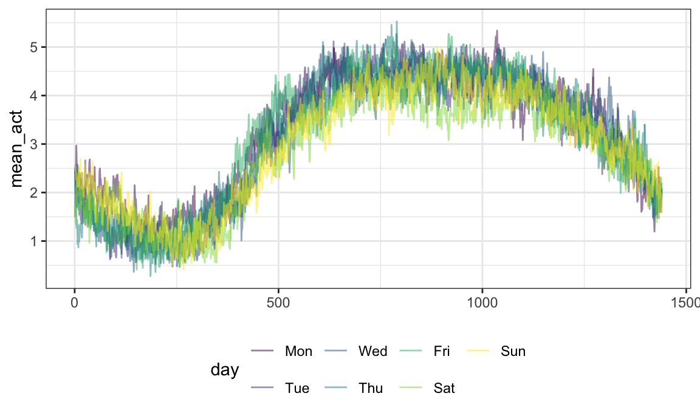
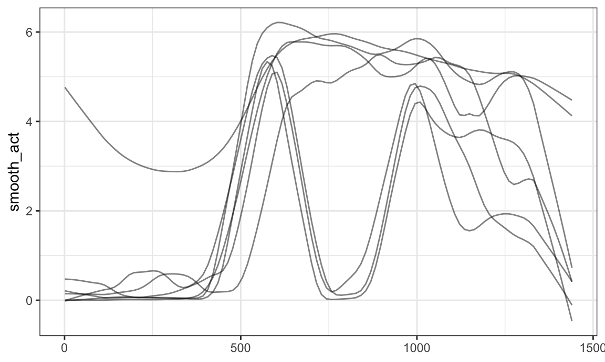
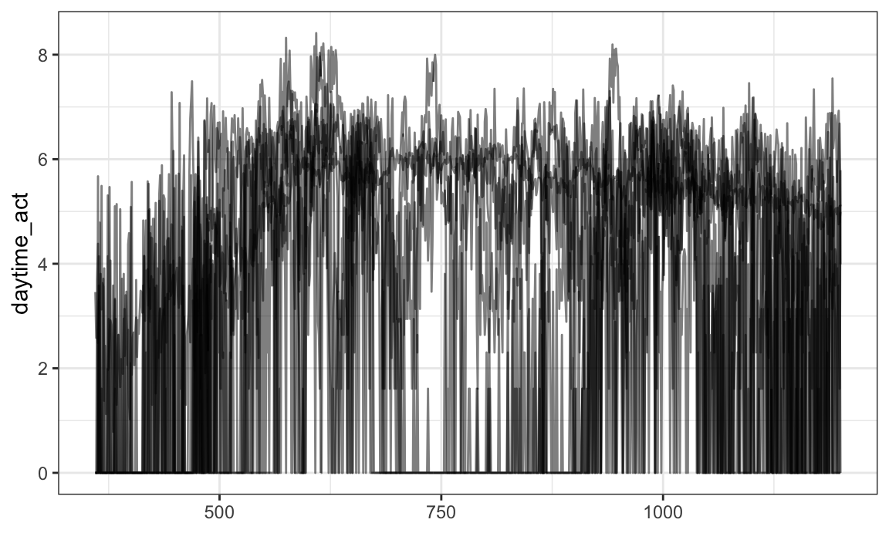
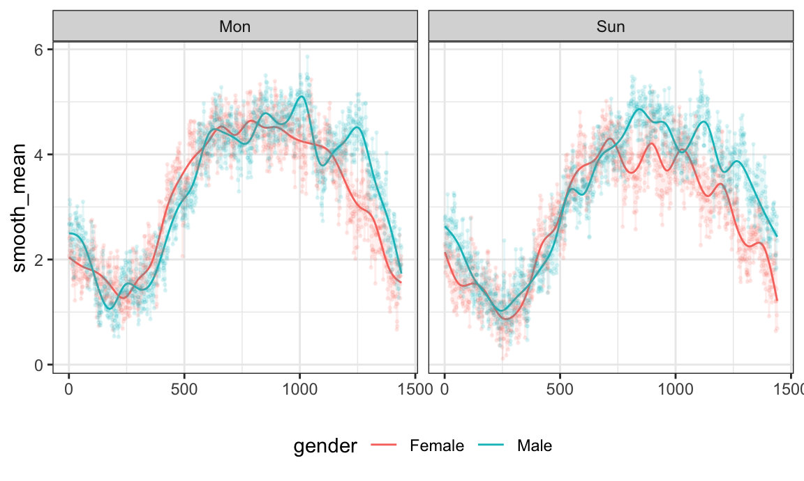
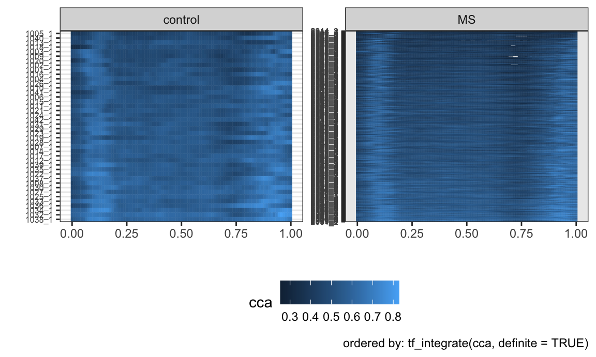

tidyfunThis page hosts a presentation / quick intro to tidyfun – enjoy!
The code in this page is drawn from tidyfun vignettes, and is intended as a quick introduction; for more details, please read the complete documentation!
If you haven’t installed tidyfun the code below will do so.
devtools::install_github("fabian-s/tidyfun")Next I’ll load the package, as well as the tidyverse.
library(tidyfun)
## Registered S3 method overwritten by 'GGally':
## method from
## +.gg ggplot2
##
## Attaching package: 'tidyfun'
## The following objects are masked from 'package:stats':
##
## sd, var
library(tidyverse)The datasets used in this vignette are the tidyfun::chf_df and tidyfun::dti_df dataset. The first contains minute-by-minute observations of log activity counts (stored as a tfd vector called activity) over seven days for each of 47 subjects with congestive heart failure. In addition to id and activity, we observe several covariates.
data(chf_df)A quick plot of these data is below.
chf_df %>%
ggplot(aes(y = activity)) +
geom_spaghetti(alpha = .05)The tidyfun::dti_df contains fractional anisotropy (FA) tract profiles for the corpus callosum (cca) and the right corticospinal tract (rcst), along with several covariates.
data(dti_df)A quick plot of the cca tract profiles is below.
dti_df %>%
ggplot(aes(y = cca)) +
geom_spaghetti(alpha = .05)tf vectorstf is a new data type for (vectors of) functional data. It contains subclasses for “raw” functional data (tfd) that can be dense / sparse and regular / irregular, and for “basis representation” functional data (tfb). Internally, there are attributes that define function-like behavior, including evaluation for new arguments, resolution, and the functional domain.
First I’ll pull a tf vector from the tidyfun::dti_df dataset. The resulting vector contain fractional anisotropy tract profiles for the corpus callosum (cca). When printed, tf vectors show the first few arg and value pairs for each subject.
data("dti_df")
cca_five = dti_df$cca[1:5]
cca_five
## tfd[5] on (0,1) based on 93 to 93 (mean: 93) evaluations each
## inter-/extrapolation by tf_approx_linear
## 1001_1: (0.000,0.49);(0.011,0.52);(0.022,0.54); ...
## 1002_1: (0.000,0.47);(0.011,0.49);(0.022,0.50); ...
## 1003_1: (0.000,0.50);(0.011,0.51);(0.022,0.54); ...
## 1004_1: (0.000,0.40);(0.011,0.42);(0.022,0.44); ...
## 1005_1: (0.000,0.40);(0.011,0.41);(0.022,0.40); ...For illustration, we plot the vector cca_five below.
plot(cca_five)Converting “raw” to “basis” representation is possible, and introduces some smoothing by default.
cca_five_b =
cca_five %>%
tfb()
## Percentage of input data variability preserved in basis representation
## (per functional observation, approximate):
## Min. 1st Qu. Median Mean 3rd Qu. Max.
## 95.60 96.40 96.90 97.12 98.00 98.70A quick plot illustrates the difference visually; lots of things are different in the background!
plot(cca_five)
lines(cca_five_b, col = "red")tf vectorsThe following is a brief overview of the kinds of operations available for tf vectors.
You can perform basic arithmetic and logical comparisons:
cca_five[1] + cca_five[1] == 2 * cca_five[1]
## 1001_1
## TRUE
log(exp(cca_five[2])) == cca_five[2]
## 1002_1
## TRUE
cca_five - (2:-2) != cca_five
## 1001_1 1002_1 1003_1 1004_1 1005_1
## TRUE TRUE FALSE TRUE TRUEYou can summarize using mean, sd, and other functions:
c(mean = mean(cca_five), sd = sd(cca_five))
## tfd[2] on (0,1) based on 93 to 93 (mean: 93) evaluations each
## inter-/extrapolation by tf_approx_linear
## mean: (0.000, 0.45);(0.011, 0.47);(0.022, 0.48); ...
## sd: (0.000,0.049);(0.011,0.052);(0.022,0.062); ...You can determine whether a function satisfies a logical condition anywhere:
cca_five %>%
tf_anywhere(value > .65)
## 1001_1 1002_1 1003_1 1004_1 1005_1
## TRUE FALSE TRUE FALSE FALSEAnd you can zoom in on regions of interest:
cca_five_zoom =
cca_five %>%
tf_zoom(.5, 1)
plot(cca_five_zoom)tf vectors in dataframesThe main goal of tidyfun is to ease exploratory analysis by putting functional data in data frames. Since tf vectors are treated the same way as vectors of class numeric or factor, they can enter dataframes the same way.
The DTI data, for example, include scalar covariates and two functional variables:
dti_df
## # A tibble: 382 x 5
## id sex case cca rcst
## <dbl> <fct> <fct> <tfd_irrg> <tfd_irrg>
## 1 1001 female contr… 1001_1: (0.000,0.49);(0.0… 1001_1: (0.000,0.26);(0.…
## 2 1002 female contr… 1002_1: (0.000,0.47);(0.0… 1002_1: ( 0.22,0.44);( 0…
## 3 1003 male contr… 1003_1: (0.000,0.50);(0.0… 1003_1: ( 0.22,0.42);( 0…
## 4 1004 male contr… 1004_1: (0.000,0.40);(0.0… 1004_1: (0.000,0.51);(0.…
## 5 1005 male contr… 1005_1: (0.000,0.40);(0.0… 1005_1: ( 0.22,0.40);( 0…
## 6 1006 male contr… 1006_1: (0.000,0.45);(0.0… 1006_1: (0.056,0.47);(0.…
## 7 1007 male contr… 1007_1: (0.000,0.55);(0.0… 1007_1: (0.000,0.52);(0.…
## 8 1008 male contr… 1008_1: (0.000,0.45);(0.0… 1008_1: (0.000,0.33);(0.…
## 9 1009 male contr… 1009_1: (0.000,0.50);(0.0… 1009_1: (0.000,0.57);(0.…
## 10 1010 male contr… 1010_1: (0.000,0.46);(0.0… 1010_1: ( 0.22,0.44);( 0…
## # … with 372 more rowsAnd the CHF data is an example of a multilevel dataset with a functional observation:
chf_df
## # A tibble: 329 x 9
## id gender age bmi event_week event_type week day activity
## <int> <chr> <int> <int> <int> <chr> <int> <chr> <tfd_reg>
## 1 1 Male 41 26 41 . 1 Monday [1]: (1,0);…
## 2 1 Male 41 26 41 . 1 Tuesd… [2]: (1,0);…
## 3 1 Male 41 26 41 . 1 Wedne… [3]: (1,0);…
## 4 1 Male 41 26 41 . 1 Thurs… [4]: (1,4);…
## 5 1 Male 41 26 41 . 1 Friday [5]: (1,6);…
## 6 1 Male 41 26 41 . 1 Satur… [6]: (1,0);…
## 7 1 Male 41 26 41 . 1 Sunday [7]: (1,5);…
## 8 3 Female 81 21 32 . 1 Monday [8]: (1,3);…
## 9 3 Female 81 21 32 . 1 Tuesd… [9]: (1,0);…
## 10 3 Female 81 21 32 . 1 Wedne… [10]: (1,0)…
## # … with 319 more rowsNow our functional data are tidy! That is, we have data rectangles, and each functional observation exists in a single “cell”.
Dataframes using tidyfun to store functional observations can be manipulated using tools from dplyr, including select and filter:
chf_df %>%
select(id, day, activity) %>%
filter(day == "Monday") %>%
ggplot(aes(y = activity)) +
geom_spaghetti(alpha = .05)
Operations using group_by and summarize are allowed:
chf_df %>%
group_by(day) %>%
summarize(mean_act = mean(activity)) %>%
ggplot(aes(y = mean_act, color = day)) +
geom_spaghetti()One can mutate functional observations – here we exponentiate the log activity counts to obtain original recordings:
chf_df %>%
mutate(exp_act = exp(activity)) %>%
ggplot(aes(y = exp_act)) +
geom_spaghetti(alpha = .05)Some dplyr functions are most useful in conjunction with new functions in tidyfun. For example, one might use filter with tf_anywhere to filter based on the values of observed functions:
chf_df %>%
filter(tf_anywhere(activity, value > 9)) %>%
ggplot(aes(y = activity)) +
geom_spaghetti()
One can add smoothed versions of existing observations using mutate and tf_smooth:
chf_df %>%
filter(id == 1) %>%
mutate(smooth_act = tf_smooth(activity)) %>%
ggplot(aes(y = smooth_act)) +
geom_spaghetti()
## using f = 0.15 as smoother span for lowess
One can also extract observations over a subset of the full domain using mutate and tf_zoom:
chf_df %>%
filter(id == 1) %>%
mutate(daytime_act = tf_zoom(activity, 360, 1200)) %>%
ggplot(aes(y = daytime_act)) +
geom_spaghetti()In general, EDA for functional data using tidyverse tools is now possible, and is often most powerful when paired with new functions in tidyfun.
We’ve seen both plot and geom_spaghetti to aid in understanding some content to this point – base R for tf vectors, ggplot for tidy data. You can use more advanced options and combine with data wrangling steps.
You can use facetting:
chf_df %>%
filter(day %in% c("Monday", "Sunday")) %>%
ggplot(aes(y = activity, color = gender)) +
geom_spaghetti(alpha = .1) +
facet_grid(~ day)
Together with data manipulation tools, the integration with ggplot can produce useful exploratory analyses. Note that this plot also introduces geom_meatballs():
chf_df %>%
group_by(gender, day) %>%
summarize(mean_act = mean(activity)) %>%
mutate(smooth_mean = tfb(mean_act)) %>%
filter(day %in% c("Monday", "Sunday")) %>%
ggplot(aes(y = smooth_mean, color = gender)) +
geom_spaghetti(size = 1.25, alpha = 1) +
geom_meatballs(aes(y = mean_act), alpha = .1) +
facet_grid(~ day)
## Percentage of input data variability preserved in basis representation
## (per functional observation, approximate):
## Min. 1st Qu. Median Mean 3rd Qu. Max.
## 88.70 91.35 92.00 91.56 92.25 93.00
## Percentage of input data variability preserved in basis representation
## (per functional observation, approximate):
## Min. 1st Qu. Median Mean 3rd Qu. Max.
## 89.00 91.80 93.00 92.14 93.05 93.30Lasagna plots are a variant on a heatmaps which show functional observations in rows and use color to illustrate values taken at different arguments. In tidyfun, lasagna plots are implemented through gglasagna. A first example, using the CHF data, is below.
chf_df %>%
filter(day %in% c("Monday", "Sunday")) %>%
gglasagna(activity)A somewhat more involved example, demonstrating the order argument and taking advantage of facetting, is next.
dti_df %>%
gglasagna(
y = cca,
order = tf_integrate(cca, definite = TRUE),
arg = seq(0,1, l = 101)) +
theme(axis.text.y = element_text(size = 6)) +
facet_wrap(~ case, ncol = 2, scales = "free")
The DTI data in the refund package has been a popular example in functional data analysis. In the code below, we create a data frame (or tibble) containing scalar covariates, and then add columns for the cca and rcst track profiles. This code was used to create the tidyfun::dti_df dataset included in the package.
dti_df = tibble(
id = refund::DTI$ID,
sex = refund::DTI$sex,
case = factor(ifelse(refund::DTI$case, "MS", "control")))
dti_df$cca = tfd(refund::DTI$cca, arg = seq(0,1, l = 93))
dti_df$rcst = tfd(refund::DTI$rcst, arg = seq(0, 1, l = 55))“Long” format data frames containing functional data include columns containing a subject identifier, the functional argument, and the value each subject’s function takes at each argument. There are also often (but not always) non-functional covariates that are repeated within a subject. For data in this form, we use tf_nest to produce a data frame containing a single row for each subject.
An example is the pig weight data from the SemiPar package, which is a nice example from longitudinal data analysis. This includes columns for id.num, num.weeks, and weight – which correspond to the subject, argument, and value.
data("pig.weights", package = "SemiPar")
pig.weights = as_tibble(pig.weights)
pig.weights
## # A tibble: 432 x 3
## id.num num.weeks weight
## <int> <int> <dbl>
## 1 1 1 24
## 2 1 2 32
## 3 1 3 39
## 4 1 4 42.5
## 5 1 5 48
## 6 1 6 54.5
## 7 1 7 61
## 8 1 8 65
## 9 1 9 72
## 10 2 1 22.5
## # … with 422 more rowsWe create pig_df by nesting weight within subject. The result is a data frame containing a single row for each pig, and columns for id.num and the weight function.
pig_df =
pig.weights %>%
tf_nest(weight, .id = id.num, .arg = num.weeks)
pig_df
## # A tibble: 48 x 2
## id.num weight
## <int> <tfd_reg>
## 1 1 1: (1,24);(2,32);(3,39); ...
## 2 2 2: (1,22);(2,30);(3,40); ...
## 3 3 3: (1,22);(2,28);(3,36); ...
## 4 4 4: (1,24);(2,32);(3,40); ...
## 5 5 5: (1,24);(2,32);(3,37); ...
## 6 6 6: (1,23);(2,30);(3,36); ...
## 7 7 7: (1,22);(2,28);(3,36); ...
## 8 8 8: (1,24);(2,30);(3,38); ...
## 9 9 9: (1,20);(2,28);(3,33); ...
## 10 10 10: (1,26);(2,32);(3,40); ...
## # … with 38 more rowsAdditional functions allow conversion from other data structures to tf vectors, and also implement conversions back to these data structures.
tidyfun itself is a work in progress:
Integration with analysis is longer-term goal:
refund functions have been unofficially updated to work with dataframe / tf intpus